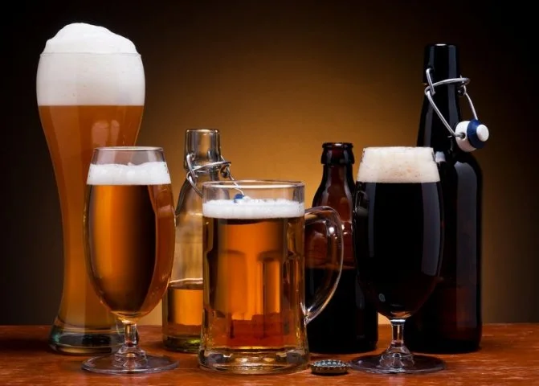

Що таке крафтове пиво?
Крафтове пиво — це пиво, виготовлене невеликими незалежними пивоварнями, де головна увага приділяється якості, смаку та індивідуальності напою. На відміну від масового пива, крафтове часто експериментує зі стилями, інгредієнтами та технологіями, створюючи унікальні комбінації ароматів і смаків.

Невеликі пивоварні зазвичай прагнуть розповісти свою історію через пиво: кожен сорт має власний характер і підкреслює особливості місцевих традицій, інгредієнтів та майстерності. Для споживача це можливість відкривати нові смаки, насолоджуватися натуральними інгредієнтами та підтримувати незалежних виробників.
Крафтове пиво — це не просто напій, це культура, спосіб досліджувати світ пива та насолоджуватися його різноманіттям.